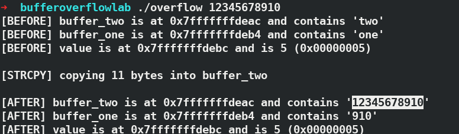
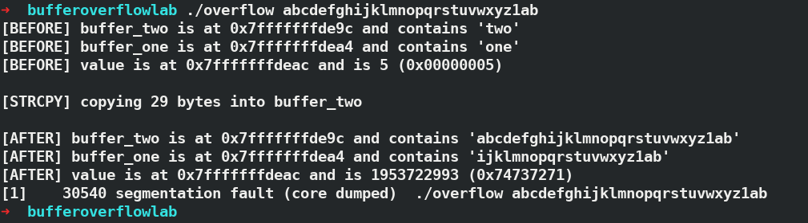
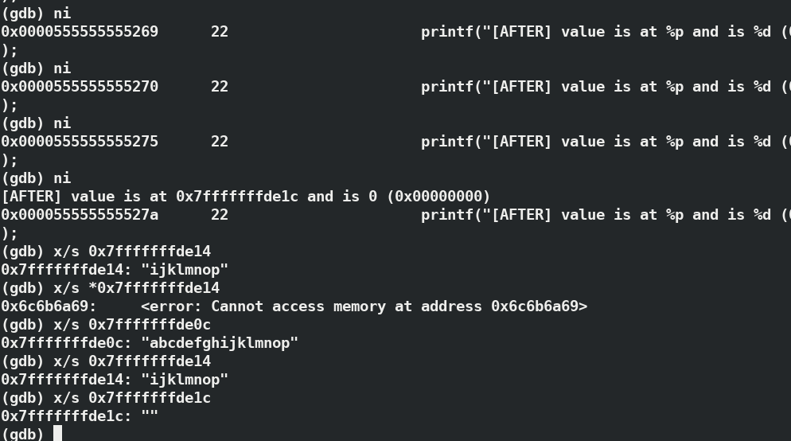
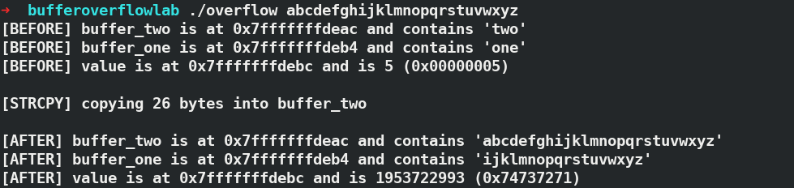

Computer Security lab 2018 ( Bufferoverflow lab)
Table of Contents
Buffer overflows exploits occur when a program s to write into a buffer beyond the buffers size and get arbitrary code to execute. This can lead to bypassing security protocols, executing parts of code that aren't meant to be executed (changing the flow of control), or gaining control of a machine.
1 Setup
To disable address randomization in kernel, for ease of bufferoverflow test
# to rollback set value to 2 sudo sysctl -w kernel.randomize_va_space=0
Also gcc compiler implements a security mechanism called stack guard to disable it you can use a flag -fno-stack-protector during compilation
2 Tools
2.1 objdump
This is a simple tool that will dump an object files information. This will parse the object file and give information on mapped memory for functions, symbols, header information, etc.
3 Tasks
3.1 2.1 man objdump
3.1.1 Answers
-x or --all-headers(Display all available header information, including the symbol table and relocation entries. Using -x is equivalent to specifying all of -a -f -h -p -r -t.)-t or --syms(Print the symbol table entries of the file.)-M intel or --disassembler-options=intel( where M is the flag andintelis argument )
3.1.2 Sample Example and answers
Sample C program
int add_nums(int a, int b){ return a + b; } int main(void){ add_nums(17, 25); }
3.2 2.2 GDB
GDB is a debugging tool that allows you to run the compiled file and step through the assembly. Before we look at the simple.c file with gdb, here is a table of common commands.
3.2.1 Answers
0x0000555555555140memory address after the call to addnums
3.3 3.1 Simple Buffer Overflow
3.3.1 Answer
- bufferone=one, buffertwo=two, value=5 and after bufferone=one, buffertwo=1234, value=5
- I used "12345678910"
- buffertwo=12345678910 value and bufferone=910 (my
buffer_twoandbuffer_onewas 8 byte big)  - I got this error after I kept long value:
Program received signal SIGSEGV, Segmentation fault. 0x0000003432343332 in ?? () - previously bufferone"one", buffertwo="two", value=5, after bufferone="ijklmnop", buffertwo="abcdefghijklmnop", value=""(empty)

- the following output was seen by running with fullalphabet
./overflow 'abcdefghijklmnopqrstuvwxyz' - Significance about above command is that, whenever the input is given more than 8 bytes it overflows towards next buffer regardless of any change in memory addresses.